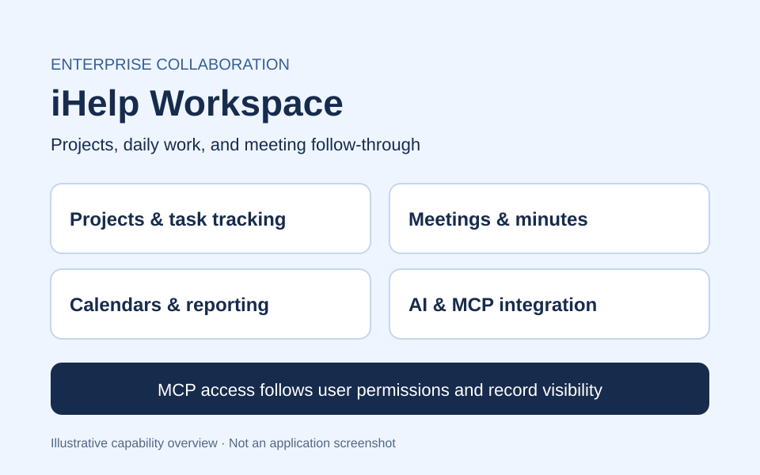

Project overview
GLPI-integrated collaboration workspace for projects, task tracking, meetings and minutes, calendars, and reporting. Its MCP interface lets AI assistants work with authorized workspace capabilities while preserving user permissions and record visibility.
Add the project background here: who it serves, where it fits in the organization, and why it was built. Replace this draft with the actual story before presenting it as a finished case study.
The challenge
Describe how people worked before this project. Explain the manual steps, disconnected systems, or missing information that made the process difficult.
Add one concrete example of the problem and explain what a successful solution needed to make easier.
Key features
- Core workflow
Describe the main task users complete and the screens or actions that support it.
- Connected information
Explain which data or systems the project brings together and why that connection matters.
- Controls and visibility
Describe the relevant permissions, validation, tracking, or reporting capabilities.
How it works
- Start with a user need
Explain how a user enters the system and starts the main process.
- Complete the workflow
Walk through the important actions, checks, and integrations in order.
- Review the result
Explain what the user receives, what is recorded, and what happens next.
My contribution
Specify your actual role, the parts you owned, and how you worked with the team. Distinguish your own implementation work from the wider team's contribution.
Add a technical decision you made, the alternatives you considered, and why the chosen approach fit the project.
Technology & architecture
List the verified frontend, backend, database, integration, and deployment technologies used in this project.
User interface → application services → data and integrations
Replace this illustrative flow with the project's actual architecture.Outcomes & lessons
Describe the real outcome for users and the business. Add measured results only when you have evidence; qualitative improvements are useful too.
Close with what you learned, a tradeoff you would revisit, or the next improvement you would make.